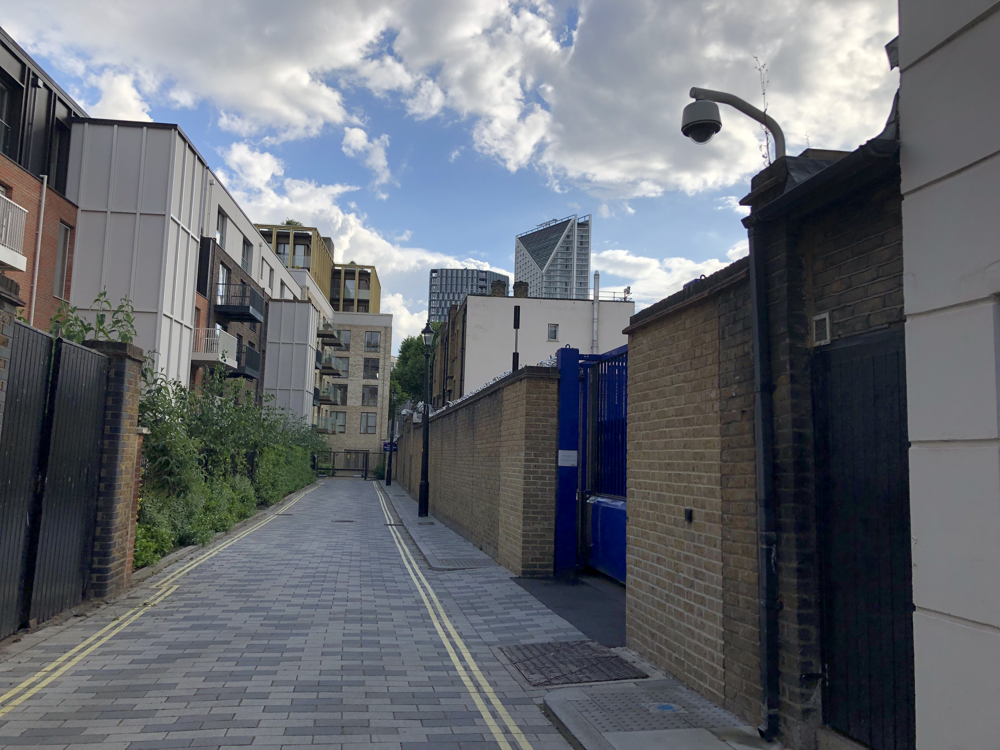
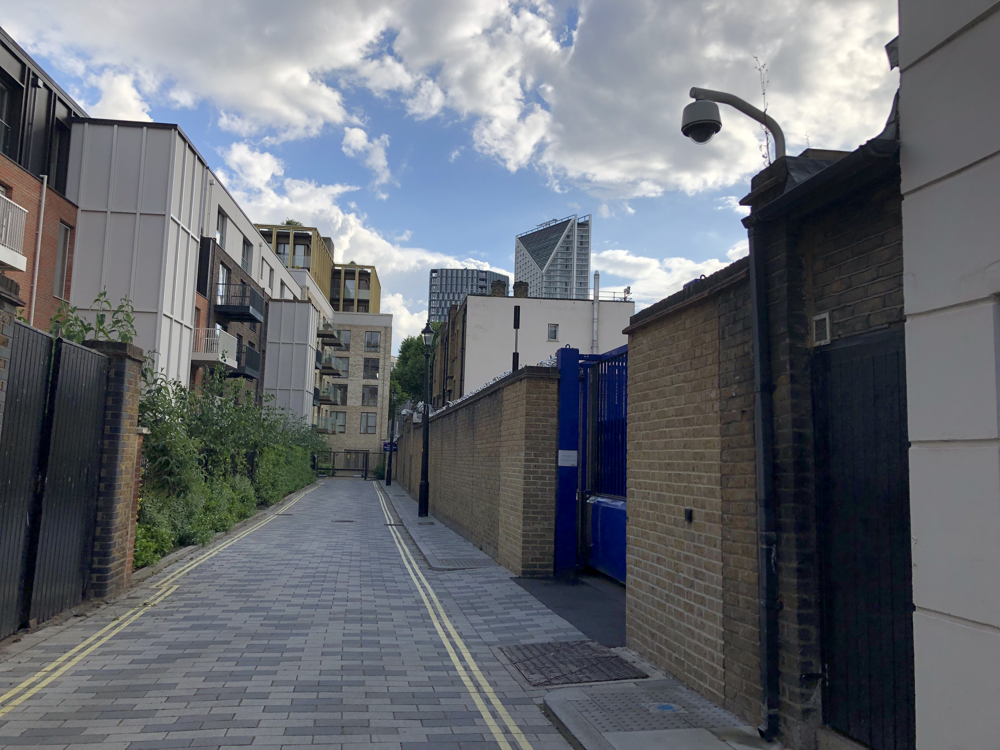
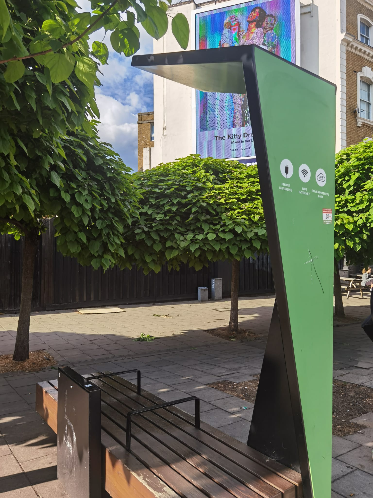
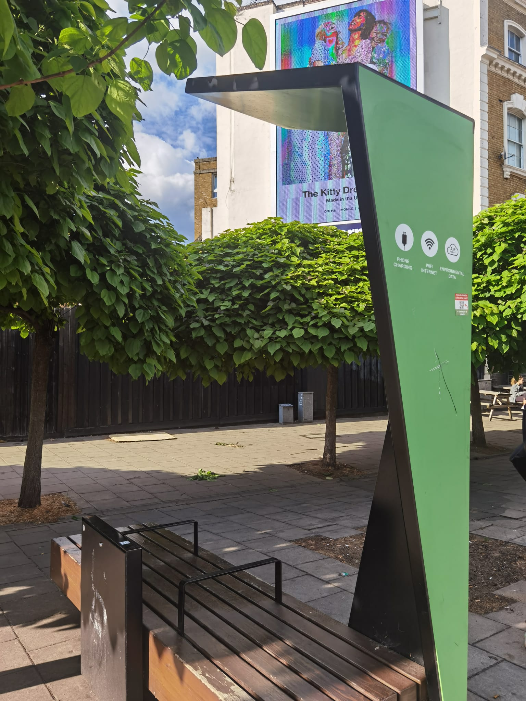

Almost all objects from what we picked were stuff that's already present in the user's environment, disguised as real but with urine inside it, to avoid others doubting/ suspecting anything. We chose to focus on ‘employee persona' as the frequency of
drug testing is higher and the risk of getting caught can suspend them from work. Under employees, we narrowed down to police officials as the criticality of being caught is high, with their repetition at stake, hence trust
being the utmost element to rely on. We created a fake situation to role play and understand the actions. As we roleplayed an exemplar, we realized the possible design interventions part of the system and began to design them.
To understand the scenario with real locations, we visited the Southwark police station, and spent time observing the environment outside, possible places to exchange, etc.
 

 
